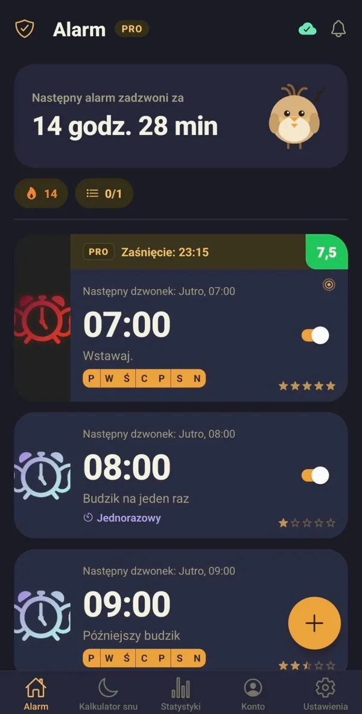
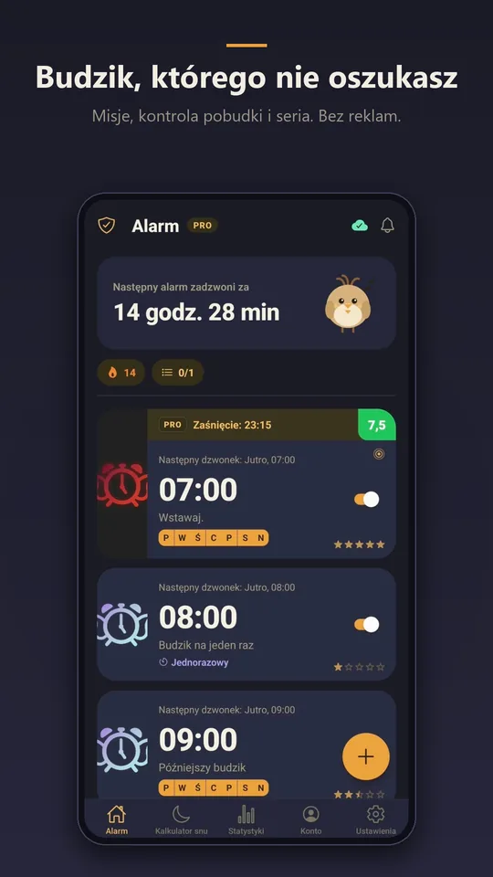
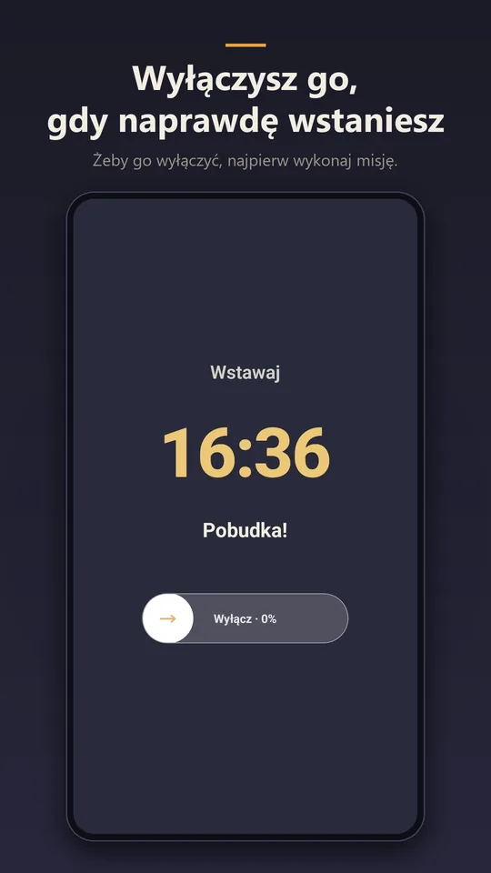
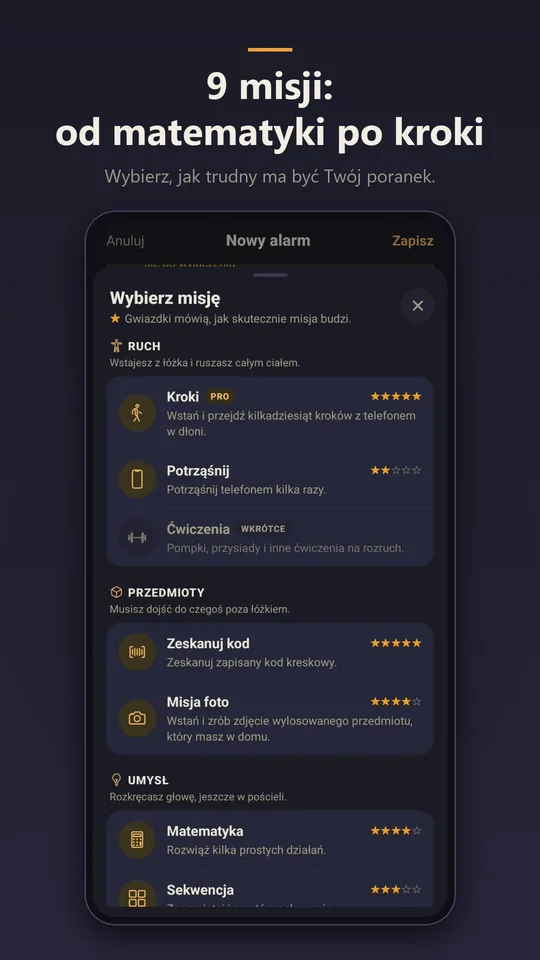
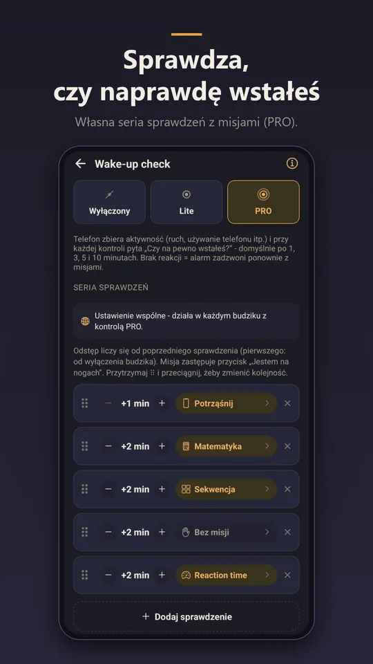
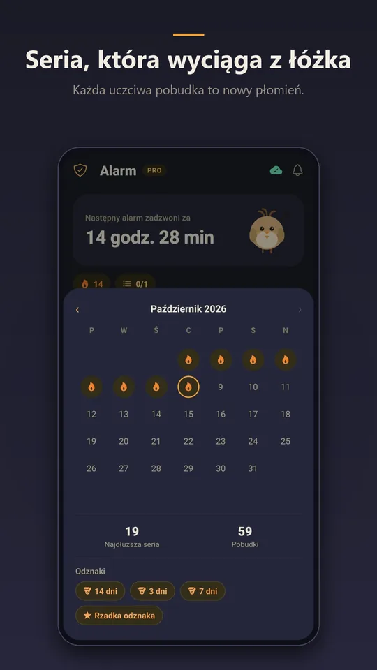
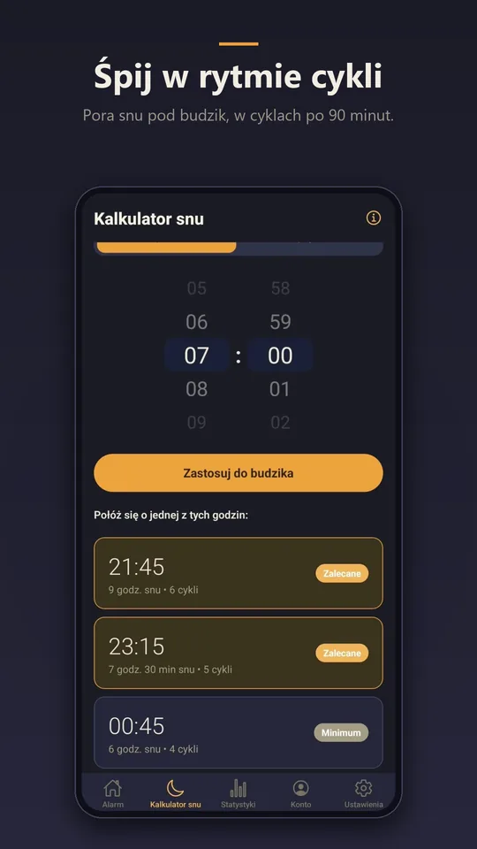

Kontrola pobudki
Wyłączenie alarmu to nie koniec. Larky sprawdza po kilku minutach, czy jesteś na nogach, i wraca, jeśli telefon leży nieruchomo. W PRO ułożysz serię do sześciu sprawdzeń, każde z własną misją.
Budzik dla mózgu z ADHD
Larky wyłączysz dopiero po wykonaniu misji — a zanim ją skończysz, już nie śpisz. Kilka minut później sprawdzi jeszcze, czy naprawdę jesteś na nogach.

Matematyka, sekwencja, kod kreskowy przy ekspresie albo spacer po mieszkaniu — wybierz to, co Cię rozbudzi.
Alarm gra, dopóki nie skończysz. Nie uciszysz go jednym ruchem z zamkniętymi oczami.
Kontrola pobudki zagląda po kilku minutach. Jeśli telefon leży nieruchomo, budzik wraca.






Alarm gra, dopóki nie wykonasz misji. Wybierz te, które Cię rozbudzą:
Każdą misję ustawiasz osobno: liczba rund i trudność. Do budzika dodasz trzy misje, w PRO pięć. Gotowe zestawy zapiszesz jako szablony.
Wyłączenie alarmu to nie koniec. Larky sprawdza po kilku minutach, czy jesteś na nogach, i wraca, jeśli telefon leży nieruchomo. W PRO ułożysz serię do sześciu sprawdzeń, każde z własną misją.
Jeśli minutę po pełnej głośności nadal nie reagujesz, Larky podkręca dźwięk do maksimum, wzmacnia wibracje i miga latarką.
Podaj godzinę pobudki, a kalkulator policzy porę snu w cyklach po 90 minut — albo odwrotnie. Deep Sleep (PRO) przypomni wieczorem, kiedy się położyć, i poprowadzi przez zasypianie.
Każda uczciwa pobudka przedłuża serię. Odznaki zbierasz za wytrwałość i za kolejne misje — od pierwszej do trzysetnej.
Po wyłączeniu budzika Larky prowadzi przez Twoją listę: woda, leki, rozciąganie. Jedno zadanie po drugim, z odliczaniem.
Ustaw czas albo godzinę, a krótka drzemka w ciągu dnia nie zamieni się w trzy godziny.
O której naprawdę wstajesz i ile drzemek wypada na poranek. Ostatni tydzień za darmo, miesiąc i pół roku w PRO.
Narastająca głośność, wymuszone maksimum, limit drzemek, cisza na czas misji i własne dzwonki.
Bez limitu czasu i bez reklam.
Wszystko z wersji darmowej, a do tego:
Plan miesięczny, roczny (7 dni za darmo na start) albo dożywotni — jedna płatność, bez odnowień. Płatności obsługuje Google Play, a subskrypcję anulujesz tam w każdej chwili.
Tak. Budzik, osiem misji i kontrola pobudki Lite działają za darmo, bez limitu czasu i bez reklam. PRO jest opcjonalne.
Nie. Larky działa w całości bez konta. Konto przydaje się tylko przy zmianie telefonu.
Jeszcze nie — na razie Larky jest tylko na Androida.
Wracają same: po ponownym uruchomieniu telefonu Larky ustawia je od nowa.
W Sklepie Google Play: ikona profilu → Płatności i subskrypcje → Subskrypcje. PRO działa do końca opłaconego okresu.